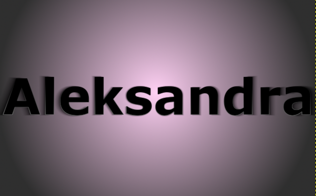
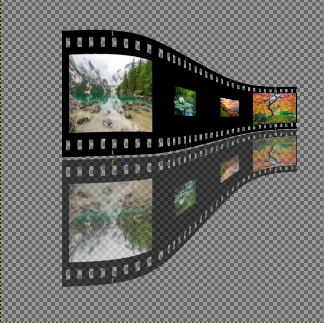
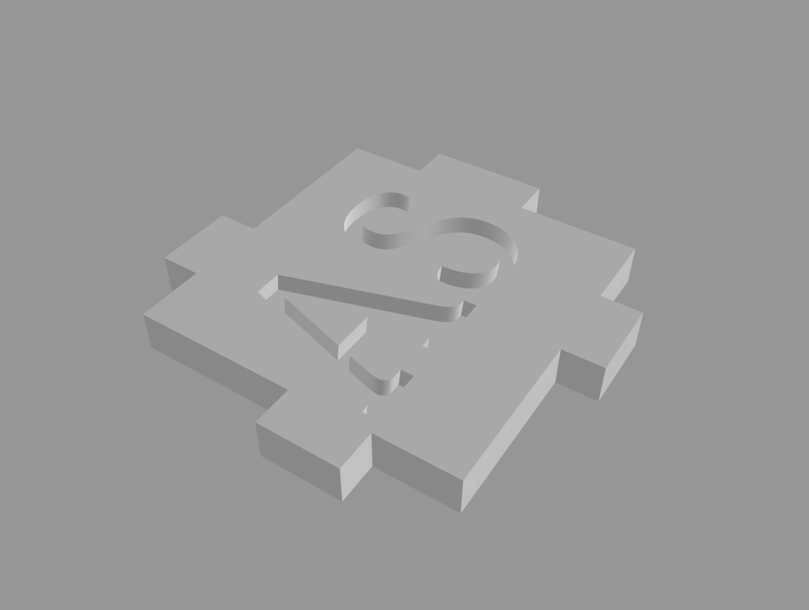

Datorikas stundās mēs jau esam apguvuši vairākas tēmas:
Un tagad apgustam HTML.
forma otrais dzerdaudz dzerProgrammā Ms Word mēs apguvām, kā veidot un formatēt dokumentus. Mēs arī stradājām ar teksta, paragrāfu noformēšanu, attēliem, tabulām, sarakstiem, utt.
Viena daļa no tēmas par attēlu apstrādi bija rastra grafika. Tājā mēs apguvam rastra grafiku un tās izmantošanu, ka attēls sastāv no pikseļiem. Mēs iemācījamies kā strādāt ar attēliem programmā GIMP un apgūstām tās pamata rīkus. Beigās mēs izveidojam attēlu ar sava vārda burtiem,darbu ar fotoattēliem, un īsu GIF animāciju par savu tēmu.


Otra daļa no attēlu apstrādes bija vektorgrafika. Šajā tēmā mēs arī apguvam kā veidot un rediģēt attēlus, bet jau ar citiem rīkiem programmā Inkscape. Mēs iemācījamies strādāt ar slāniem, mainīt objektu krāsu, kontūras biezumu, caurspīdīgumu, utt. Beigās mēs izveidojām logo savas grupas uzņēmumam.
Šajā tēmā mēs apguvam, kā veidot 3D objektus printēšanai. Mēs strādājām vietnē tinkercad.com, un tur izveidojām grupā 3D kubu ar mūsu iniciāļiem.


Programmā Excel mēs apguvām funkcijas, piemēram, summēšanu, vidējās vērtības aprēķināšanu, procentu aprēķinus un citas vienkāršas matemātiskas darbības, iepazināmies ar datu kārtošanu un filtrēšanu, kas palīdz ātrāk atrast nepieciešamo informāciju, veidojām diagrammas, utt.
Lejupielādēt Excel failu